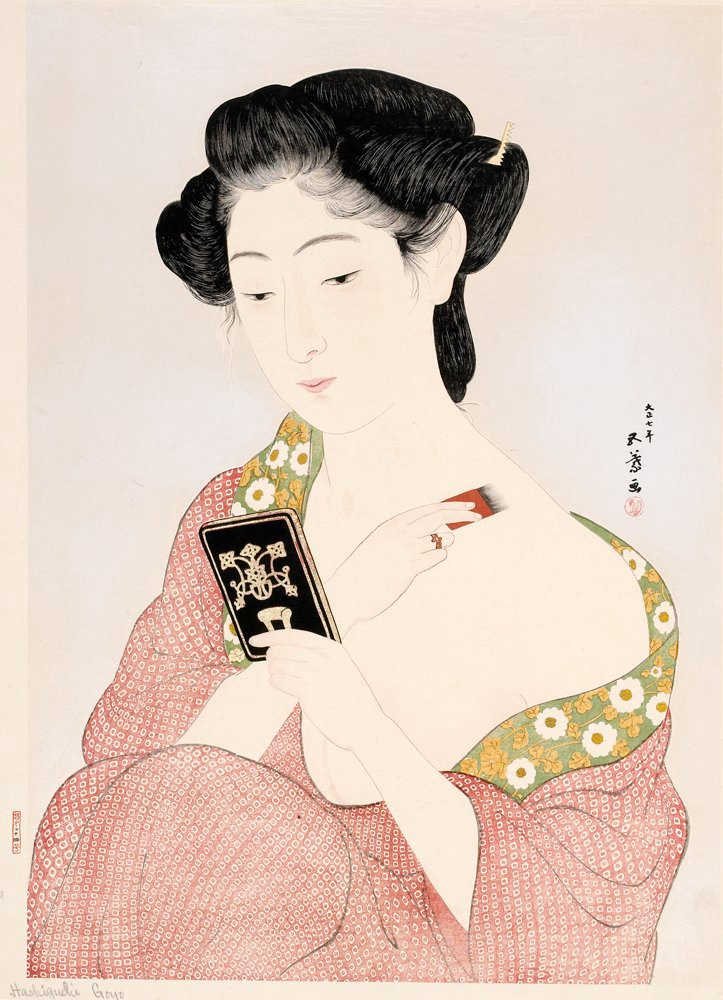

History

Korean beauty products is a booming industry in South Korea, and is now seeing popularity in the American scene. However, these products seem to aim a very specific audience, an audience with mostly pale skin, or those who want to have pale skin. The truth is, this "obsession" with having pale skin is written back in the history of Korea! Back in the Korean dynasty, the Korean Shamanism teachings stated that a person with white and pale skin is respected.
Around 1867, when Korea welcomed in new people from different countries, Western media and mainstream culture became more accessible to Korean people. Koreans startetd adopting the Western beauty standards. With this impact of Western culture, pale skin determined whether a person was privileged, and would exempt them from doing manual labor. This would signify if someone was wealthy or not!!!

INSERT TEXT HERE